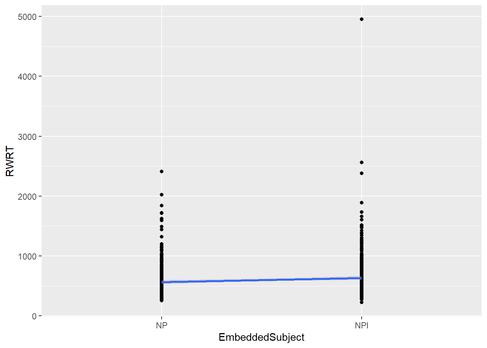
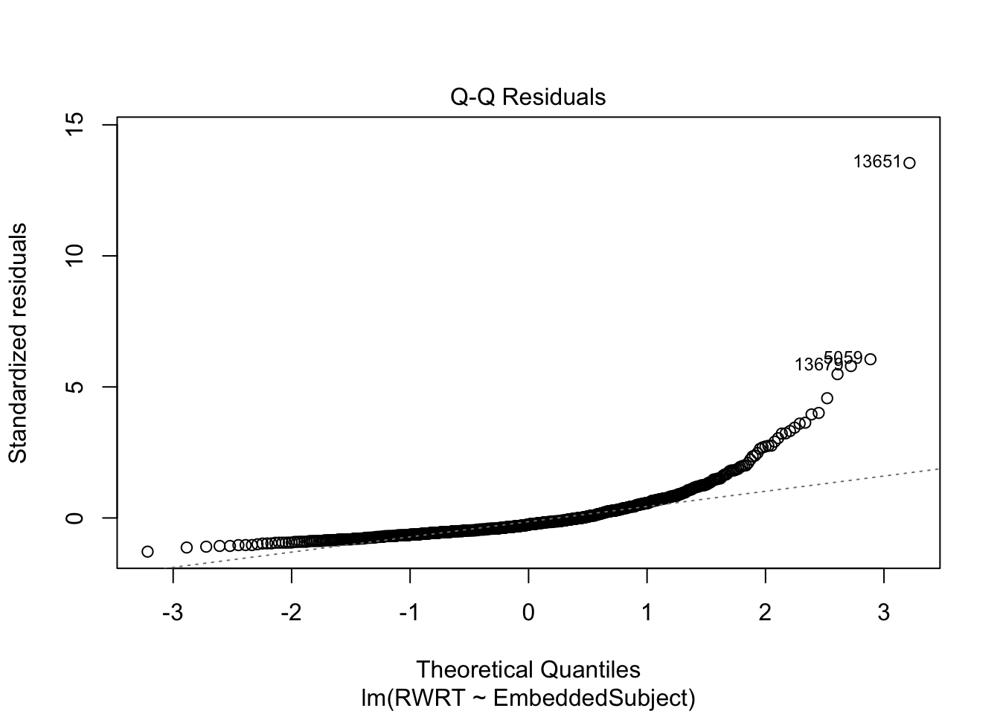
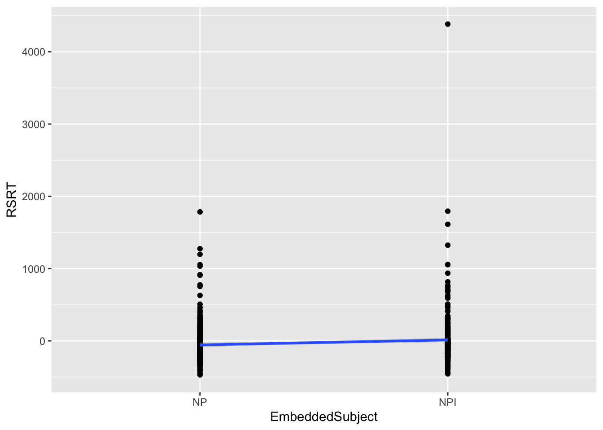
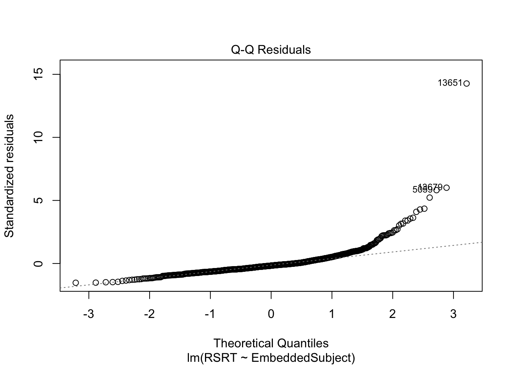
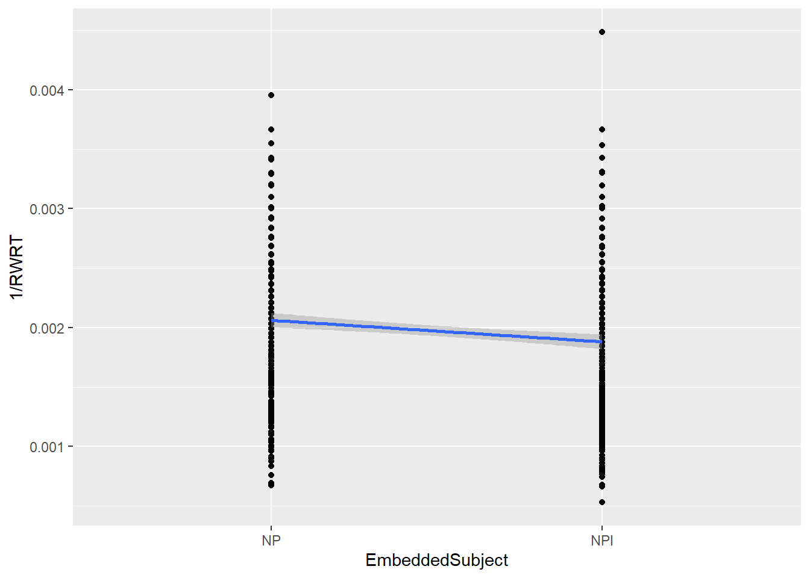
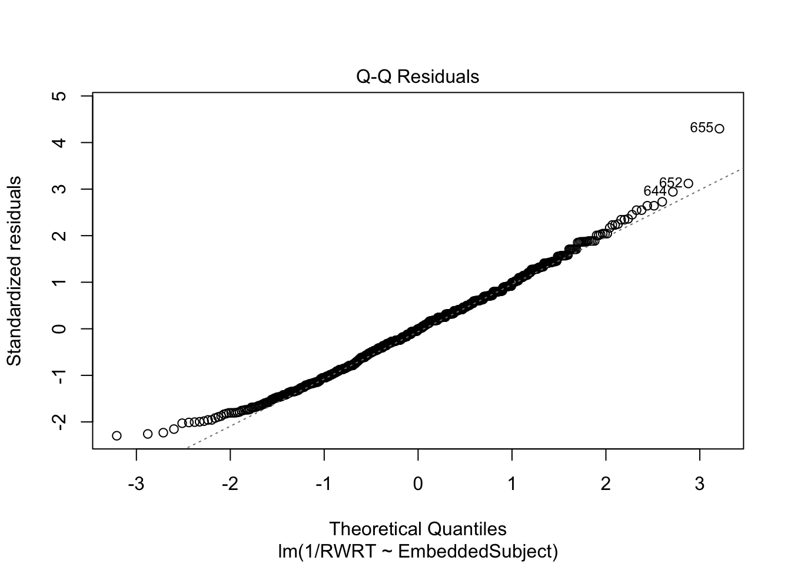

── Attaching core tidyverse packages ──────────────────────── tidyverse 2.0.0 ──
✔ dplyr 1.1.4 ✔ readr 2.1.5
✔ forcats 1.0.0 ✔ stringr 1.5.2
✔ ggplot2 4.0.0 ✔ tibble 3.3.0
✔ lubridate 1.9.4 ✔ tidyr 1.3.1
✔ purrr 1.1.0
── Conflicts ────────────────────────────────────────── tidyverse_conflicts() ──
✖ dplyr::filter() masks stats::filter()
✖ dplyr::lag() masks stats::lag()
ℹ Use the conflicted package (<http://conflicted.r-lib.org/>) to force all conflicts to become errors
library(car) #used for the model assumptions checking
Loading required package: carData
Attaching package: 'car'
The following object is masked from 'package:dplyr':
recode
The following object is masked from 'package:purrr':
some
Task#1 - Load and explore dataset
For the analysis in this assignment we use again a subset of the real data from a Self-Paced Reading study on Negative Polarity Items and complementizer agreement in Basque (see Pablos, L., & Saddy, D. (2009). Negative polarity items and complementizer agreement in Basque. Brain Talk, 61.)
Load the data provided in the file BasqueNPISampleEx5.Rda :
Caution
In this exercise, the data was inadvertently saved using the save() function. Using save() and load() saves and loads all the variables in the environment. In this case it will load in the environment a variable called basquenpi_Ex5
load('./data/BasqueNPISampleEx5.Rda')
The basquenpi_Ex5 data frame contains only the data from Region Number 8 (complementizer position), which was considered the “critical region” for analysis in the experiment.
The dataframe includes the following variables:
Item – Factor identifying the sentence used (coded as a number from 1 to 72).
Subject – Factor identifying the participant on the experiment (coded as a number from 1 to 32)
EmbeddedSubject – Factor/predictor indicating the nature of the embedded subject with the following levels:
NP – for target sentences with a Noun Phrase as subject
NPI – for target sentences with a Negative Polarity Item as subject
Agreement Morphology – Factor/predictor indicating the nature of agreement with the following levels:
Declarative – for target sentences that contained a complementizer with declarative morphology
Partitive – for target sentences that contained a complementizer with partitive morphology
Condition: Factor/predictor indicating the condition of the experiment with four levels (“A”,”B”,”C”,”D”). This factor was introduced for the exercises in this assignment. The conditions correspond to combinations of the two factors before:
A: NPI – Partitive
B: NPI – Declarative
C: NP – Partitive
D: NP-Declarative
Word – Actual word presented
RegionNumber – Region number for the analysis of the reading time ( = 8 in this experiment)
RWRT – Raw (recorded) Reading Time of the word
RWZS – Z-Score of the raw reading time
RSRT – Calculated Residual Reading Time
RSZS – Z-Score of the residual reading time
QPCT – Measured response accuracy for each item with two possible values (100 or 0)
Task#2 - Linear Model RWRT
Tasks# 2.1 Plot the relationship between the Raw Reading Time RWRT and the EmbeddedSubject predictor.
This can be done with ggplot() as described in the workgroup.
basquenpi_Ex5 %>%ggplot(aes(x=EmbeddedSubject, y = RWRT)) +geom_point() +geom_smooth(aes(group=1),method="lm")
`geom_smooth()` using formula = 'y ~ x'

Task# 2.2 Create a linear model of RWRT with EmbeddedSubject as predictor
The coefficient for EmbeddedSubject is significant, meaning that it is different from 0 (\(b=68.38,95\%CI[23.15,113.60], t(2.968), p=0.003\)) and contributes to the model explanatory power.
Also the F-statistics shows that the model is significantly better than a model where the slop coefficient is zero ( \(F(766,1)=8.81,p=0.03\) ).
Nevertheless the quality of the fit shows that only ~1% of the residuals variance is explained by the model ( \(R^2=0.011\) ). This indicates that the current model does not have a high explanatory power.
- Provide the predicted values from the model for the two levels of the EmbeddedSubject factor.
EmbeddedSubject = NP (reference value 0): corresponds to the intercept: 564.28 ms
EmbeddedSubject = NPI (value 1): corresponds to the \(b_0+b_1=564.28+68.38 = 632.66 ms\)
Task# 2.3 Compare the model created in Task 2.2 with a null model with only an intercept , using anova(), AIC() and BIC()
We create a null model first
m0<-lm(RWRT~1, data=basquenpi_Ex5)summary(m0)
Call:
lm(formula = RWRT ~ 1, data = basquenpi_Ex5)
Residuals:
Min 1Q Median 3Q Max
-375.5 -175.5 -86.5 74.5 4352.5
Coefficients:
Estimate Std. Error t value Pr(>|t|)
(Intercept) 598.47 11.58 51.69 <2e-16 ***
---
Signif. codes: 0 '***' 0.001 '**' 0.01 '*' 0.05 '.' 0.1 ' ' 1
Residual standard error: 320.8 on 767 degrees of freedom
Let’s compare now the models:
anova(m0,m1)
Analysis of Variance Table
Model 1: RWRT ~ 1
Model 2: RWRT ~ EmbeddedSubject
Res.Df RSS Df Sum of Sq F Pr(>F)
1 767 78952745
2 766 78055118 1 897627 8.8089 0.003091 **
---
Signif. codes: 0 '***' 0.001 '**' 0.01 '*' 0.05 '.' 0.1 ' ' 1
BIC(m0,m1)
df BIC
m0 2 11055.94
m1 3 11053.80
AIC(m0,m1)
df AIC
m0 2 11046.65
m1 3 11039.87
- Describe your observations.
Looking at the results of anova(m0,m1) : The result shows that there is a significance difference between the two models ( \(F(766,1)=8.81,p=0.03\) ). Note that this is the same result produced by summary(m1), which produces a test against the null models. we will see that the use of anova() is more relevant when comparing models with different predictors between them for model selection.
Using the AIC and BIC factors, we see that in both cases the values are lower for the m1 model, confirming that part of the residual variance can be explained by the EmbeddedSubject factor, although the difference is not too significant, particularly in BIC.
\[
AIC_{m_0}=11046.65> AIC_{m_1}=11039.87\]
\[
BIC_{m_0}=11055.94>BIC_{m_1}=11053.80
\]
Tip
Criteria for selection based on BIC:
There is not a universal criteria on how to select models based on BIC in terms of how big a difference between values matter. A commonly use criteria is the one proposed and justified in Raftery (1995) providing the strength of the evidence to select a model:
BIC difference 0-2 : Weak evidence
BIC difference 2-6: Positive evidence
BIC difference 6-10: Strong evidence
BIC difference >10: Very strong evidence
Task# 2.4 Check the linear model assumptions
We checked the assumptions two ways: looking at the residuals linearity and homoscedasticity
plot(m1,which=2)

ncvTest(m1)
Non-constant Variance Score Test
Variance formula: ~ fitted.values
Chisquare = 35.30158, Df = 1, p = 2.824e-09
As can be seen from the assumptions checking, there is a significant deviation from the assumptions both of normality and uniformity in the variance of residuals. These strongly suggest that the model can not explain the data adequately and that there is a a likely need for data transformation, since the relationship is not linear with the predictor.
Task# 2.5 Write a paragraph report of the analysis as per the guidelines and example and Workgroup 4
Report:
Simple linear regression was performed to assess the relationship between the Reading Time measured in milliseconds and the nature of the Embedded Subject (NPI or NP).
It was found that the nature of the Embedded Subject significantly affected the reading time (\(\beta = 68.38\), \(95\%CI[23.15,113.60]\), \(t=2.97, p=0.003\)). Nevertheless, the model explained only \(1\%\) of the variance in the reading time ( \(F(766,1)=8.81,p=0.03,R^2=0.011\)) and the model assumption checking revealed significant deviations from both the residual normality and heteroscedasticity, so the analysis should be revised.
Task#3 (Extra credit): Linear model for RSRT
Task# 3.1 Repeat all the steps in Task# 2 for the Residual Reading Time RSRT instead of RWRT
Call:
lm(formula = RSRT ~ EmbeddedSubject, data = basquenpi_Ex5)
Residuals:
Min 1Q Median 3Q Max
-468.2 -147.6 -50.7 68.0 4370.3
Coefficients:
Estimate Std. Error t value Pr(>|t|)
(Intercept) -55.74 15.65 -3.561 0.000392 ***
EmbeddedSubjectNPI 68.38 22.13 3.089 0.002078 **
---
Signif. codes: 0 '***' 0.001 '**' 0.01 '*' 0.05 '.' 0.1 ' ' 1
Residual standard error: 306.7 on 766 degrees of freedom
Multiple R-squared: 0.01231, Adjusted R-squared: 0.01102
F-statistic: 9.545 on 1 and 766 DF, p-value: 0.002078
The fitted model is:
\[
RSRT_i = -55.74+68.38\times EmbeddedSubject +\epsilon_i
\] The fit can be visualized as:
basquenpi_Ex5 %>%ggplot(aes(x=EmbeddedSubject, y = RSRT)) +geom_point() +geom_smooth(aes(group=1),method="lm")
`geom_smooth()` using formula = 'y ~ x'

Comparison with the null model:
anova(mRS0,mRS1)
Analysis of Variance Table
Model 1: RSRT ~ 1
Model 2: RSRT ~ EmbeddedSubject
Res.Df RSS Df Sum of Sq F Pr(>F)
1 767 72936170
2 766 72038543 1 897627 9.5446 0.002078 **
---
Signif. codes: 0 '***' 0.001 '**' 0.01 '*' 0.05 '.' 0.1 ' ' 1
BIC(mRS0,mRS1)
df BIC
mRS0 2 10995.06
mRS1 3 10992.19
AIC(mRS0,mRS1)
df AIC
mRS0 2 10985.77
mRS1 3 10978.26
With again similar results as in the RWRT.
We finally check the model assumptions:
plot(mRS1,which=2)

ncvTest(mRS1)
Non-constant Variance Score Test
Variance formula: ~ fitted.values
Chisquare = 49.22344, Df = 1, p = 2.284e-12
Task#3.2 Describe your observations on the main differences in the results of the analysis between Tasks 2 and 3.
The results are similar in both fits.
In particular the slope coefficient (effect of predictor RSRT ) is the same as in the case of the RWRT.
Considering that RSRT represents the corrected reading times accounting for the word duration, that correction did not improve the model fit neither improved the model validity as seen in the model assumptions checking.
Data filtering and transformation
The exercise above was intended to show a typical case with data from a real experiment, where we often encounter issues with the data failing to meet model assumptions. It is very important to check them to avoid making false claims or drawing incorrect conclusions.
Now, how will we deal with this sort of problems? I show below a normal process for data analysis.
Data cleaning: It is common to clean the data before performing the final analysis. A typical approach would be to remove outliers at a certain threshold. For example, we could remove the points a few standard deviations away from the mean. Note doing that we are implicitly assuming normality of the data, so it is good to check how many data points would be removed in that case. In the dataframe, we have a conveniently calculated parameter RWZS that provides for each data point the z-score, i.e., the number of standard deviations a value is away from the mean.
Tip
This is automatically produced by the output of the Linger experimental software package, but you could easily reproduce it by a simple function call as mutate(RWZS = (RWRT-mean(RWRT))/sd(RWRT)).
We see that we have removed only around 2.2% of the data.
Data transformation: with the filtering above, we still have a significantly skewed data, which in most cases results in non-normality of the residuals.
In these cases, we ‘transform’ the data to try to normalize the distribution. Reading and reaction times are normally right skewed, and a typical transformation is to use an inverse transformation: \(1/RT\).
Let’s see what is the distribution in our case of \(1/RWRT\).
We still see a significant effect of the EmbeddedSubject factor, with the model performing better than the null model (as per the F-statistic above).
dfFiltered %>%ggplot(aes(x=EmbeddedSubject, y =1/RWRT)) +geom_point() +geom_smooth(aes(group=1),method="lm")
`geom_smooth()` using formula = 'y ~ x'

Let’s now check the model assumptions:
plot(mTransformed,which=2)

ncvTest(mTransformed)
Non-constant Variance Score Test
Variance formula: ~ fitted.values
Chisquare = 0.002240039, Df = 1, p = 0.96225
As you can see, now the normality of residuals is maintained as well as the homogeneity of variance. We can use this model to make claims on our data and report it.
The interpretation of the coefficients when using a transformation can not be done directly. You can calculate the predicted value in each case and transform it back to report. For example the value when EmbeddedSubject=NP would be:
Note that we resolved the issue of the model validity, but still, the model created only explains \(~2\%\) of the variance in the data, which suggest that other explanatory predictors are likely to be needed, or that the random part of the data is dominant (no effect of the manipulation).
A complete reporting for this analysis would be
Report:
Simple linear regression was performed to assess the relationship between the Reading Time measured in milliseconds and the nature of the Embedded Subject (NPI or NP).
Model assumption checking revealed significant deviations from both the residual normality and heteroscedasticity, so an inverse transformation was applied to the data and a new regression analysis performed with the following resulting model fit:
It was found that the nature of the Embedded Subject significantly affected the reading time at the complementizer position ( \(\beta=-1.81\times10^{-4},95\%CI[-2.68\times10^{-4},-9.42\times10^{-5}],p<.001\)). Nevertheless, the model explained only \(2.18\%\) of the variance in the reading time ( \(F(749,1)=16.74,p<.001,R^2=0.022\)).
Raftery, Adrian E. 1995. “Bayesian Model Selection in Social Research.”Sociological Methodology, 111–63.